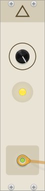
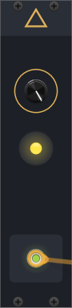
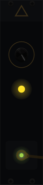
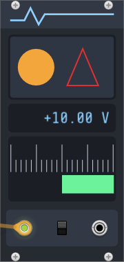
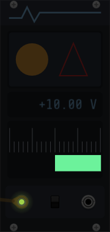
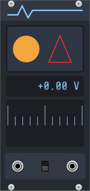

Draw a module’s panel¶
Implemented (RP-35), Linux x86_64 inside Rack Free 2.6.6. This walkthrough follows two example plugins, the Lantern and the Meter. Each section covers one feature of the Plugin API Guide’s dark panels and custom widgets sections. The pictures are screenshots of Rack’s own window, read back from the frames Rack drew under Xvfb with Mesa’s software OpenGL. The tests take them again on every run and compare them with these, so they show what the code does. CI has run candidate smoke checks with software rendering on Linux, macOS and Windows; these screenshots are not hardware-GPU evidence, and other GPU drivers are not tested here.
The drawing reference is Drawing and the window; widgets are in subclassable widgets.
A light and a dark panel¶
Give raw.create_panel two SVGs, and it makes a ThemedSvgPanel, which shows
the second while Rack’s View > Use dark panels if available is on. Rack’s
themed screws and jacks (ThemedScrew, ThemedPJ301MPort) follow the same
setting:
class LanternWidget(app.ModuleWidget):
"""The module's panel. Rack passes the module, or None for its browser's preview."""
def __init__(self, module: Module | None) -> None:
super().__init__()
self.set_module(module)
# Two SVGs make a ThemedSvgPanel: Rack picks one by its dark-panel setting.
self.set_panel(
raw.create_panel(str(assets.plugin("res/Lantern.svg")), str(assets.plugin("res/Lantern-dark.svg")))
)
grid, right = app.RACK_GRID_WIDTH, self.box.size.x - 2 * app.RACK_GRID_WIDTH
bottom = app.RACK_GRID_HEIGHT - app.RACK_GRID_WIDTH
for x, y in ((grid, 0), (right, 0), (grid, bottom), (right, bottom)):
self.add_child(raw.create_widget(cl.ThemedScrew, Vec(x, y)))
self.add_param(raw.create_param_centered(cl.RoundBlackKnob, mm2px(Vec(15.24, 38.0)), module, Param.GLOW))
self.add_output(raw.create_output_centered(cl.ThemedPJ301MPort, mm2px(Vec(15.24, 108.0)), module, Output.LEVEL))
self.add_child(
raw.create_light_centered(cl.LargeLight[cl.YellowLight], mm2px(Vec(15.24, 62.0)), module, Light.LAMP)
)
Both SVGs must have the same size. Only the light one needs the components
layer that bin/rackpy-plugin add-module reads.


Left: the light panel (cream, #e9e3d5). Right: the same module after
switching to dark panels. The panel is charcoal (#1d2026), the triangle
and ring are amber, and Rack swaps in its dark screws and jack. The knob and
lamp do not change.
Lights stay lit in a dark room¶
View > Room brightness dims everything Rack draws on a module’s panel layer. Rack then draws lights on a second, self-illuminating layer, which it does not dim:

At 25% room brightness the dark panel is nearly black, but the lamp and the cable plug’s light are as bright as before. The tests measure it: the panel’s pixels drop to a quarter of their brightness, and the lamp’s stay within 12 of 255.
Shapes with NanoVG¶
A custom widget overrides draw(args). args.vg is the NanoVG context for
that call only. The Meter’s top widget fills a rounded rectangle and a circle,
and strokes a triangle:
class Shapes(w.TransparentWidget):
"""Shapes drawn with NanoVG: a rounded panel, a filled circle, and a stroked triangle."""
def draw(self, args: w.DrawArgs) -> None:
vg = args.vg # valid only during this call
assert vg is not None # Rack always passes a context to draw()
width, height = self.box.size.x, self.box.size.y
# A rounded rectangle, filled dark blue-grey.
nvg.begin_path(vg)
nvg.rounded_rect(vg, 0, 0, width, height, 4)
nvg.fill_color(vg, nvg.rgb(0x2E, 0x36, 0x44))
nvg.fill(vg)
# A circle, filled amber.
nvg.begin_path(vg)
nvg.circle(vg, width * 0.25, height / 2, height * 0.3)
nvg.fill_color(vg, nvg.rgb(0xF2, 0xA6, 0x3B))
nvg.fill(vg)
# A triangle with a red stroke and no fill.
nvg.begin_path(vg)
nvg.move_to(vg, width * 0.55, height * 0.8)
nvg.line_to(vg, width * 0.7, height * 0.2)
nvg.line_to(vg, width * 0.85, height * 0.8)
nvg.close_path(vg)
nvg.stroke_color(vg, nvg.rgb(0xE0, 0x30, 0x30))
nvg.stroke_width(vg, 2.0)
nvg.stroke(vg)
The panel adds each custom widget as C++ does: create it, set its box, and add
it (MeterWidget in the same file). The manual’s version of this sample says
its triangle has a blue stroke, but the code draws a red one; this example’s
comment says red.
Text, with the font loaded every frame¶
Readout.draw asks Rack’s window for the font on every call. Rack caches
loaded fonts, so this is cheap. A font kept from an earlier frame stops
working once Rack replaces its graphics context. If the font cannot be loaded,
load_font returns None and the readout draws nothing:
class Readout(w.TransparentWidget):
"""The input's voltage as text."""
module: Module | None = None
def draw(self, args: w.DrawArgs) -> None:
context = raw.context_get()
if context is None or context.window is None:
return
# Load the font every frame: Rack caches it, and a font kept across frames goes stale
# when Rack replaces its graphics context. None means Rack could not load it (it logs
# why), so draw nothing rather than fail every frame.
font = context.window.load_font(str(assets.system(FONT)))
if font is None:
return
vg = args.vg # valid only during this call
assert vg is not None # Rack always passes a context to draw()
nvg.font_face_id(vg, font.handle)
nvg.font_size(vg, 26)
nvg.fill_color(vg, nvg.rgb(0x8F, 0xD0, 0xFF))
nvg.text_align(vg, nvg.NVG_ALIGN_RIGHT | nvg.NVG_ALIGN_MIDDLE)
nvg.text(vg, self.box.size.x - 6, self.box.size.y / 2, f"{voltage(self.module):+.2f} V")
The font is Rack’s own ShareTechMono, from Rack’s system folder at run time; the example does not ship a copy.
A self-lit bar¶
Bar draws only on layer 1, the layer Rack does not dim, through the
rackpy.drawing facade:
class Bar(w.TransparentWidget):
"""A bar from the centre towards the voltage, on Rack's self-lit layer: it glows in a dark room."""
module: Module | None = None
def draw_layer(self, args: w.DrawArgs, layer: int) -> None:
if layer == 1: # Rack draws layer 1 after dimming the rack by the room brightness
width, height = self.box.size.x, self.box.size.y
share = max(-1.0, min(1.0, voltage(self.module) / full_scale(self.module)))
left = width / 2 + min(share, 0.0) * width / 2
Painter(args).rect(left, height * 0.6, abs(share) * width / 2, height * 0.3).fill("#6CF29BFF")
super().draw_layer(args, layer)
A cached scale¶
Drawing every tick on every frame is wasted work: they change only with the
RANGE switch. A FramebufferWidget renders its children once into an image
and draws that image until it is marked dirty. Scale marks itself dirty when
RANGE changes:
class Scale(w.FramebufferWidget):
"""Caches Ticks: Rack renders it once into an image and draws the image every frame after."""
def __init__(self, module: Module | None) -> None:
super().__init__()
self.module = module
self.ticks = Ticks()
self.ticks.module = module
self.add_child(self.ticks)
self.shown = full_scale(module)
def step(self) -> None:
# The ticks depend only on RANGE: mark the cache dirty when it changes, so Rack renders again.
if full_scale(self.module) != self.shown:
self.shown = full_scale(self.module)
self.set_dirty()
super().step()
The tests count how often Rack draws the ticks: once to begin with, never in the next ten frames, and exactly once more after RANGE changes. A new graphics context renders it again.


Left: the Meter reading the Lantern’s 10 V output on its 10 V range. The green bar fills the right half of the scale. Right: in a room at 25%, the shapes, text and ticks dim with the panel, and the self-lit bar does not.
In the module browser¶
The browser builds each preview from a module widget with no module (None).
Rack’s control factories accept None, and the Meter’s widgets draw a resting
meter instead of reading a module:

The preview shows +0.00 V, the default 5 V range’s eleven ticks and no bar.
What else the tests check¶
tests/examples/test_drawing.py also deletes the Meter while Rack draws it
and undoes the deletion. It sends Rack’s graphics-context destroy and create
events, as a host that recreates its window would, and points the readout at
a missing font. None of these crashes or raises, and the text comes back.
Each example also builds as its own plugin and loads in Rack.